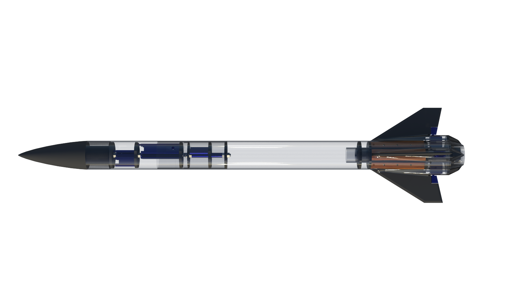
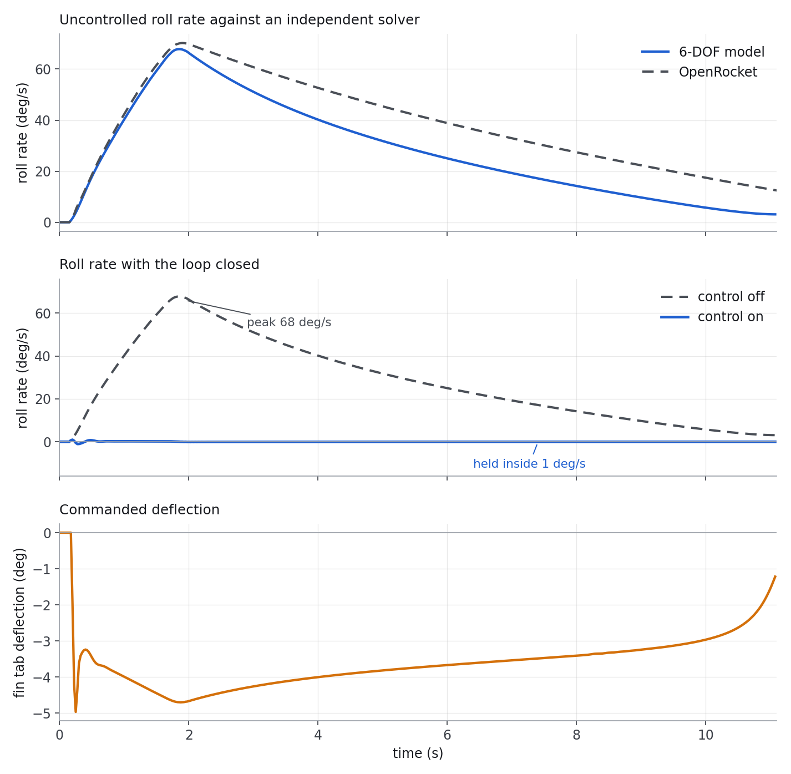

Liquid Rocketry at Illinois • Champaign, IL • August 2024 – May 2025
I led the controls sub-team that designed active roll control for Maurice 2, a high-power rocket at Liquid Rocketry at Illinois. Actuated fin tabs, aerodynamic authority measured in CFD, and a rate-damping loop using an onboard state estimate.

With the end goal of flying a pump-fed liquid rocket engine, we needed to mitigate roll for the engine and pumps to operate nominally. This is what drove the design of a roll-controlled rocket with actuated fin tabs.
My year went to three things: sizing the control surfaces, measuring how much authority they had, and writing the loop that used them. Maurice 2 did not launch during my time on the team. Its successor, Control Freak, flew in April 2026 using the same approach.
A raw gyro carries bias and noise that integrate badly, so the flight software runs a state estimate over the inertial measurements and the vehicle dynamics, and the controller acts on the estimate rather than the sensor.
The law is rate damping with the gain scheduled on airspeed through the CFD tables, so it commands a deflection the air can deliver at that instant. Control stays off during motor burn, where the vibration environment is hostile to the estimate, and takes over at burnout.
Verification came in two steps. First the open-loop model: with control disabled, the 6-DOF integration of the vehicle should reproduce what an independent solver predicts for the same airframe. It does, through the burn and into the first second of coast, which is the window the controller has to work in. Then the closed loop: the same model with the law switched on holds the vehicle to within 1 deg/s, against an uncontrolled peak near 68 deg/s and most of a full revolution accumulated before apogee.

I left the team in May 2025 for a summer internship. The airframe group carried the work onto a new vehicle, Control Freak, a 5 inch composite airframe using canards rather than fin tabs but the same method: CFD-derived roll moments to size the surfaces, state estimation and feedback to command them. Control Freak flew in April 2026.